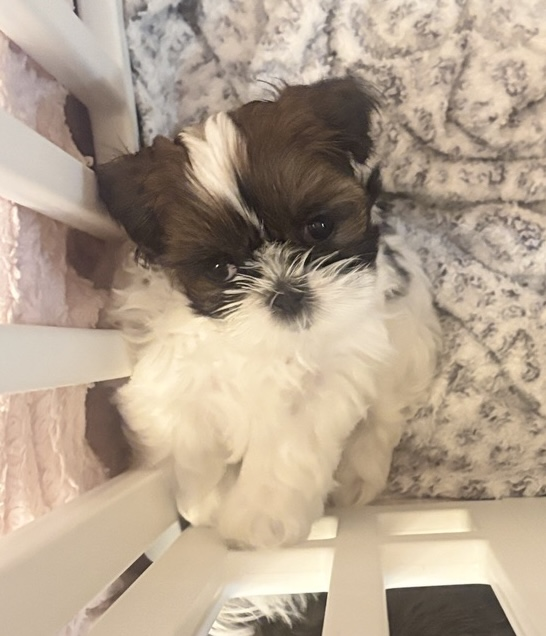

Our Puppies
Our Puppies
Our puppies are raised right here in our North Central Connecticut home, surrounded by love, attention, and the everyday sounds of family life.
These are some of our currently available and homed puppies.
Currently Available
Available Puppies
These puppies are currently available. If you are interested in learning more about one of our puppies, please contact us.

Lady
Lady was Bella’s youngest, born of her first litter. She is a sweet, friendly, playful little puppy who loves to explore and hop around happily. She was raised here in our family home with lots of playtime, attention, and plenty of people and Tzu companionship. She seems to enjoy the water and does surprisingly well with baths. Like a true little lady, she loves to have the song “She’s a Lady” sung to her! She is sure to bring all the love and personality to her new family.
Available

Lima
Lima is the firstborn puppy from Bella’s first litter. From the moment she was old enough to tumble onto her back, she has loved belly rubs and playtime. Although she is currently the smallest of the litter, she knows she’s the oldest! Lima is spunky, friendly, and always on the lookout for a playmate. She can go from playful puppy antics to giving kisses in an instant. And just like her mama, she has the most beautiful eyes.
Available
Puppies Who Have Found Their Families
Happily Home

Cat

Holly
Get in touch
Thinking about adding a Shih Tzu to your family?
We'd love to hear from you and answer any questions you may have about our dogs and puppies.
Contact Us